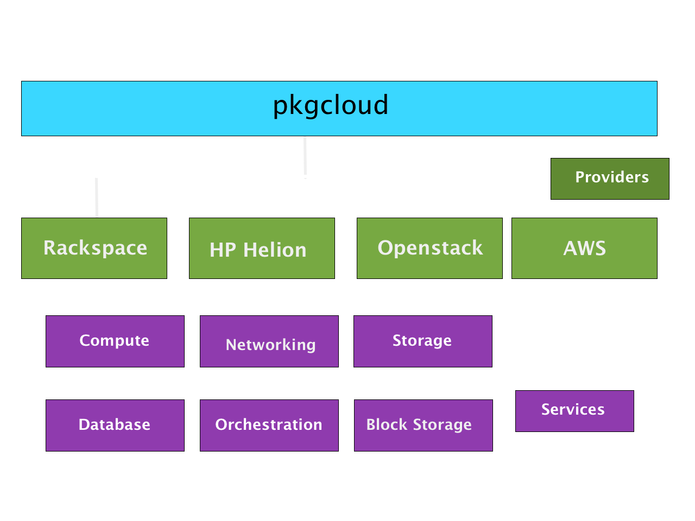

Ken Perkins | Node.js Developer Advocate @ Rackspace | @kenperkins
Phani Raj | Senior Software Developer @ HP Cloud | @phanirajuyn
Platform built on Chrome's V8 JavaScript runtime.
...uses an event-driven, non-blocking I/O model that makes it lightweight and efficient...
Asynchronous workloads, coordination,
integrating multiple systems, provisioning.
CPU intensive workloads, Maths, non-intuitive patterns
Created by nodejitsu December 2011
initially compute & storage on Rackspace.
Vision: support for multiple providers and a generalized interface.
Committing to an existing multi-cloud library was better.
Examples: Apache jclouds, fog, and Apache Libcloud.
Originally offered hpcloud-js.
hpcloud-js is now deprecated in favor of pkgcloud
pkgcloud endorsed on developer.openstack.org as the node.js SDK for openstack

* Beta Services, not fully generalized at this time.
Demo
Demo
Demo
Where does pkgcloud go from here?
Or we need your help...
#pkgcloud on Freenode IRC, github.com/pkgcloud/pkgcloud on Github